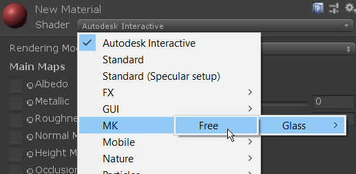

So if we need a glass in unity then
Import :
https://assetstore.unity.com/packages/vfx/shaders/mk-glass-free-100712
Import the model in unity
Assign a material to it
and in material coloumn change the shader to MK
